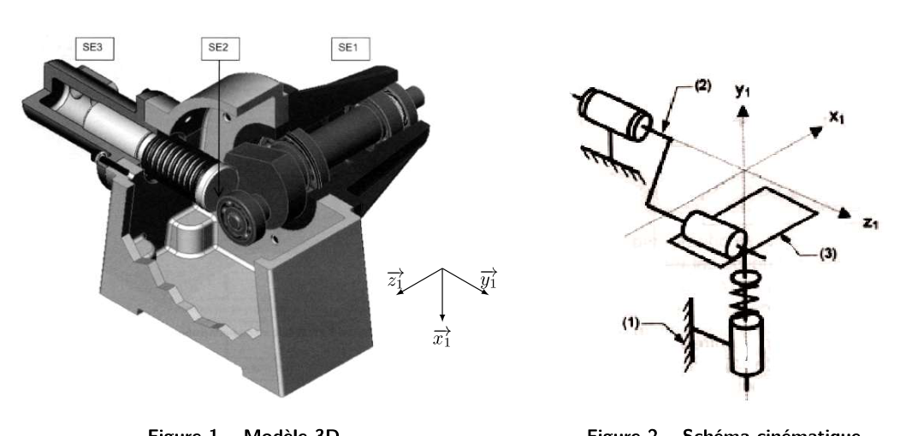
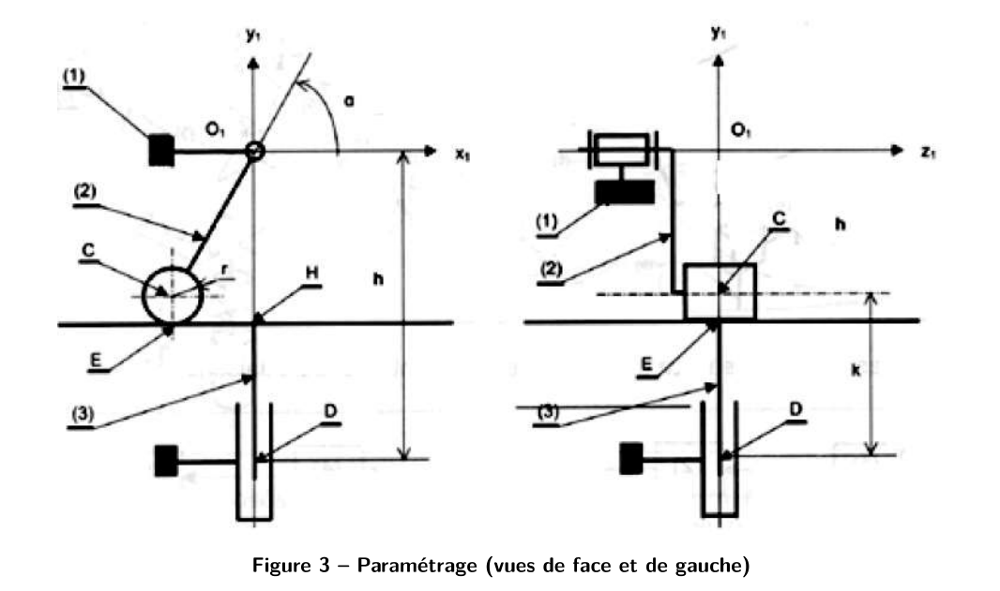

AM2 · SI · Chapitre 2 — Théorie des mécanismes (TD, partie 2)
Pompe à piston radial : hyperstatisme, correction détaillée
Deuxième partie du TD « Théorie des mécanismes (C02) », dans l'ordre du TD : 1) degré d'hyperstatisme, 2) évidence géométrique,
3) rendre l'assemblage isostatique, 4) détermination intuitive de \(h\), 5) conclusion. L'objectif : comprendre qu'un montage
peut être hyperstatique sans effort extérieur, et savoir comment le rendre isostatique.
1. Avant de commencer : l'essentiel
Ce qu'il faut savoir
Hyperstatisme : un mécanisme est hyperstatique de degré \(h\) si certaines inconnues de liaison ne se calculent pas avec les seules équations du PFS. Ce nombre se calcule de deux façons qui doivent donner le même résultat : cinématique \(h=m-I_c+E_c\), statique \(h=m-E_s+I_s\).
Défaut géométrique : une pièce réelle n'est jamais parfaite. Dans un montage hyperstatique, ce défaut crée des autocontraintes, même sans aucun effort extérieur.
Remède : ajouter un degré de liberté (remplacer une liaison par une autre qui laisse le défaut se compenser), jusqu'à atteindre \(h=0\).
Méthode du TD
1) Graphe des liaisons et nombre cyclomatique \(\gamma\). 2) Paramétrage (position du piston \(k\), angle d'entrée \(\alpha\)). 3) Approche cinématique (torseurs, fermeture de chaîne).
4) Approche statique (PFS en isolant chaque pièce). 5) Comparer les deux \(h\). 6) Chercher le défaut le plus gênant.
2. Présentation et modèle

Figure 1 (modèle 3D) et figure 2 (schéma cinématique). Solide 1 : carter. Solide 2 : arbre d'entrée (excentrique). Solide 3 : piston. On néglige le ressort.

Figure 3 (paramétrage). Cotes : \(O_1C=e\), \(O_1D=h\), \(CE=r\). Paramètres de mouvement : \(k\) (position axiale du piston) et \(\alpha\) (angle de l'arbre d'entrée).
3. Détermination du degré d'hyperstatisme
Q1Graphe de liaisons
La question en clair
Établir le graphe de liaisons de la pompe.
Démarche
Trois solides : 1 (carter), 2 (arbre), 3 (piston). Il y a trois liaisons : 1–2, 1–3 et 2–3.
Entre 2 et 1 : un pivot d'axe \((O_1,\vec z_1)\), qui guide l'arbre.
Entre 1 et 3 : un pivot glissant d'axe \((D,\vec y_1)\), qui guide le piston dans l'alésage.
Entre 2 et 3 : une linéaire rectiligne en \(E\) (normale \(\vec y_1\), direction \(\vec z_1\)), où l'excentrique pousse le piston.
Réponse
Graphe : 2 —pivot \((O_1,\vec z_1)\)— 1 —pivot glissant \((D,\vec y_1)\)— 3 —linéaire rectiligne \((E)\)— 2 : une seule boucle, fermée sur les trois solides.
Q2Nombre cyclomatique
La question en clair
Calculer le nombre cyclomatique \(\gamma\) (nombre de boucles indépendantes).
Démarche
\(\gamma=N_L-N_S+1\), avec \(N_L\) = nombre de liaisons et \(N_S\) = nombre de solides.
Ici \(N_L=3\) et \(N_S=3\) : \(\gamma=3-3+1=1\). Une seule boucle, donc \(E_c=6\gamma=6\).
Réponse \(\gamma=1\). Remarque du corrigé : si l'on découpait la liaison arbre/carter en deux liaisons (rotule + sphère-cylindre), le graphe aurait davantage de boucles.
Q3Calcul de \(I_c\) et de \(m\)
La question en clair
Calculer \(I_c\) et le nombre de mobilités \(m\).
Démarche
\(I_c\) = somme des conditions cinématiques imposées par les trois liaisons. Le corrigé les totalise : \(I_c=1+4+2=7\). Le détail par liaison est dans le corrigé ; retiens la méthode (une liaison bloque autant de mouvements qu'il y a de conditions).
Mobilités : \(m_u=1\) (translation d'entrée–sortie du piston), \(m_i=1\) (rotation propre du piston autour de son axe). Donc \(m=m_u+m_i=2\).
⚠️ Décompte de \(I_c\)
Le détail du décompte \(1+4+2=7\) est donné au raccourci dans le corrigé. Pour un contrôle, on retrouve le même \(h\) par l'approche statique (Q9) : il vaut 1 dans les deux cas, ce qui valide le total.
Réponse \(I_c=7\), \(m=2\).
3.1 Approche cinématique
Q4Torseurs cinématiques des trois liaisons
La question en clair
Écrire les torseurs cinématiques de chaque liaison.
Démarche
Pivot 2/1 d'axe \(\vec z_1\) : seule la rotation \(\omega_{z}\) est libre, \(\vec V_{O_1}=\vec 0\).
Linéaire rectiligne 3/2 en \(E\) : rotation \(\omega_y\) et \(\omega_z\) possibles, translation selon \(\vec x\) et \(\vec z\).
Réponse
\(\{\mathcal V_{2/1}\}_{O_1}=\{\omega_z\vec z_1;\ \vec 0\}\), \(\{\mathcal V_{3/2}\}_E=\{\omega_y\vec y_1+\omega_z\vec z_1;\ V_x\vec x+V_z\vec z\}\), \(\{\mathcal V_{3/1}\}_{O_1}=\{\omega_y\vec y_1;\ V_y\vec y_1\}\).
(Les notations exactes des composantes sont celles du corrigé.)
Q5Équations de fermeture de chaîne en \(O_1\)
La question en clair
Écrire les six équations provenant de la fermeture cinématique en \(O_1\).
Démarche
La fermeture s'écrit : \(\{\mathcal V_{1/1}\}\) doit être nul, donc la somme \(\{\mathcal V_{3/1}\}+\{\mathcal V_{2/3}\}+\{\mathcal V_{1/2}\}\) (chaîne fermée) = \(\{0\}\) en \(O_1\).
On écrit les six composantes (trois rotations, trois translations) de ce torseur nul : chacune donne une équation scalaire.
Les équations font intervenir les cotes \(e\), \(r\) et l'angle \(\alpha\) : c'est la géométrie qui entre dans les équations de fermeture.
Réponse
Six équations scalaires (trois en rotation, trois en translation), numérotées (1) à (6) dans le corrigé. Le détail des coefficients est dans le corrigé.
Q6Degré d'hyperstatisme (cinématique)
La question en clair
En déduire le degré d'hyperstatisme.
Démarche
\(h=m-I_c+E_c=2-7+6=1\).
RéponseHyperstatique de degré 1.
3.2 Approche statique
Q7Torseurs des actions mécaniques
La question en clair
Écrire les torseurs des actions \(\{\mathcal T_{2\to1}\}\), \(\{\mathcal T_{3\to2}\}\), \(\{\mathcal T_{3\to1}\}\).
Démarche
Une liaison transmet les efforts qu'elle ne laisse pas libres. On écrit donc chaque torseur d'action avec des inconnues \(X,Y,Z\) (résultante) et \(L,M,N\) (moment), en nommant le point de réduction (\(O_1\), \(E\) ou \(H\)).
Réponse Trois torseurs d'action avec les inconnues de chaque liaison, écrits dans la base \(\vec b_1\) (voir corrigé pour les composantes).
Q8PFS sur l'arbre 2 puis sur le piston 3
La question en clair
Écrire les équations du PFS en isolant 2, puis en isolant 3.
Démarche
Isoler 2 (arbre d'entrée) : bilan du bâti 1, du piston 3 et du moteur (couple \(C_m\)). On écrit la résultante (3 équations) et le moment en \(O_1\) (3 équations).
Isoler 3 (piston) : bilan de 2, de 1 et du fluide (force \(F_P\)). Même écriture.
Le moment moteur ressort : \(C_m=e\,Y_E\cos\alpha\) pour l'arbre (équation 12), et l'équilibre du piston donne \(Y_E=F_P\).
Arbre 2 : \(X_O=0\), \(Y_O+Y_E=0\), \(Z_O=0\), \(L_O+L_E=0\), \(M_O=0\), et \(-eY_E\cos\alpha+C_m=0\).
Piston 3 : \(X_H=0\), \(-Y_E+F_P=0\), \(Z_H=0\), \(-L_E+L_H=0\), et \(-eY_E\cos\alpha+N_H=0\).
Réponse Douze équations (1 à 18 dans le corrigé), dont les moments \(L_O\), \(L_E\), \(L_H\) ne sont pas tous déterminés.
Q9Degré d'hyperstatisme (statique) et relation entrée–sortie
La question en clair
En déduire le degré d'hyperstatisme, puis la relation entrée–sortie et la position la plus exigeante.
Démarche
\(h=m-E_s+I_s=2-12+11=1\). Les deux approches donnent \(h=1\).
Les équations dans le plan de fonctionnement permettent de calculer toutes les actions utiles. Elles donnent la relation \(C_m=e\,F_P\cos\alpha\).
Le couple est maximal pour \(\alpha=0\) (excentrique « à l'horizontale », début de compression) : le moteur doit donc fournir au moins \(e\,F_P\).
Le problème apparaît dans le plan \((O_1,\vec y_1,\vec z_1)\), perpendiculaire au plan de fonctionnement. Un défaut de rotation \(\theta_x\) (rotation du piston autour de \(\vec x_1\)) crée des moments \(L_O\), \(L_E\), \(L_D\) dans les liaisons. Ce défaut peut venir de n'importe laquelle des pièces : c'est propre aux chaînes en série.
Conséquence
Même sans couple moteur ni pression (\(C_m=F_P=0\)), l'hyperstatisme subsiste et le défaut reste entier : c'est un problème de choix de liaisons, pas d'efforts extérieurs.
Le défaut engendre des autocontraintes qui s'ajoutent aux efforts de service, et dégradent la tenue des pièces et le rendement (le moment \(L_H\) entre piston et cylindre crée des charges radiales qui chauffent).
5. Rendre l'assemblage isostatique
Q10Modifier la liaison 2/3 pour la rendre isostatique
La question en clair
Montrer que la modification proposée (liaison 2/3 remplacée par un contact ponctuel) est équivalente à la solution initiale.
Démarche
Ce qu'il faut ajouter : l'inconnue hyperstatique est associée au défaut \(\theta_x\) ; il faut donc ajouter une rotation dans une liaison. Parmi les trois liaisons, seule la 2/3 peut être modifiée sans perdre sa fonction (les deux autres guident l'arbre et le piston).
Modification : le roulement rigide à billes (rotulage très faible) est remplacé par un roulement à rotule (rotulage plus important). En réalité, cela crée une liaison ponctuelle entre 2 et 3.
Équivalence : on calcule la liaison équivalente entre 2, 2' et 3 ; on trouve bien une liaison ponctuelle, donc les deux schémas sont équivalents.
Réponse
La liaison ponctuelle permet la rotation \(\theta_x\) qui compensait le défaut : le montage devient isostatique (\(h=0\)).
6. Détermination intuitive de \(h\)
Recenser les défauts qui gênent le montage
On cherche les petits déplacements de 3 par rapport à 1 qui gênent l'assemblage au point \(D\) : trois rotations \(\delta\theta_x,\delta\theta_y,\delta\theta_z\) et trois translations \(\delta D_x,\delta D_y,\delta D_z\). Pour chacun, on regarde si une liaison voisine peut le compenser.
Défaut
Compensé par…
Influence
Rotation \(\theta_y\)
pivot glissant de sortie et linéaire en \(E\)
aucune (mobilité interne)
Rotation \(\theta_z\)
pivot d'entrée et linéaire en \(E\)
aucune (l'axe \((D,\vec y_1)\) ne coupe plus \((O_1,\vec z_1)\), mais le mécanisme marche)
Rotation \(\theta_x\)
rien en amont
certaine : c'est la famille hyperstatique
Translation \(D_x\)
translation de la linéaire en \(E\)
aucune
Translation \(D_y\)
degré de liberté du pivot glissant de sortie
sans objet
Translation \(D_z\)
translation de la linéaire en \(E\)
aucune
Conclusion (Q11)
Le défaut le plus influent est la rotation \(\theta_x\), car aucune liaison en amont ne la compense. C'est elle qui donne le degré \(h=1\) trouvé par le calcul.
7. À retenir
Hyperstatisme : \(h=m-I_c+E_c=m-E_s+I_s\). Ici \(h=1\), avec \(\gamma=1\), \(m=2\), \(I_c=7\).
Signature : des moments de liaison non calculables ; les efforts utiles restent calculables.
Défaut le plus gênant : la rotation autour de l'axe \(\vec x_1\) (\(\theta_x\)), qui crée des autocontraintes même sans charge.
Remède : remplacer la liaison 2/3 par une rotule (contact ponctuel), qui compense \(\theta_x\) et rend le montage isostatique.